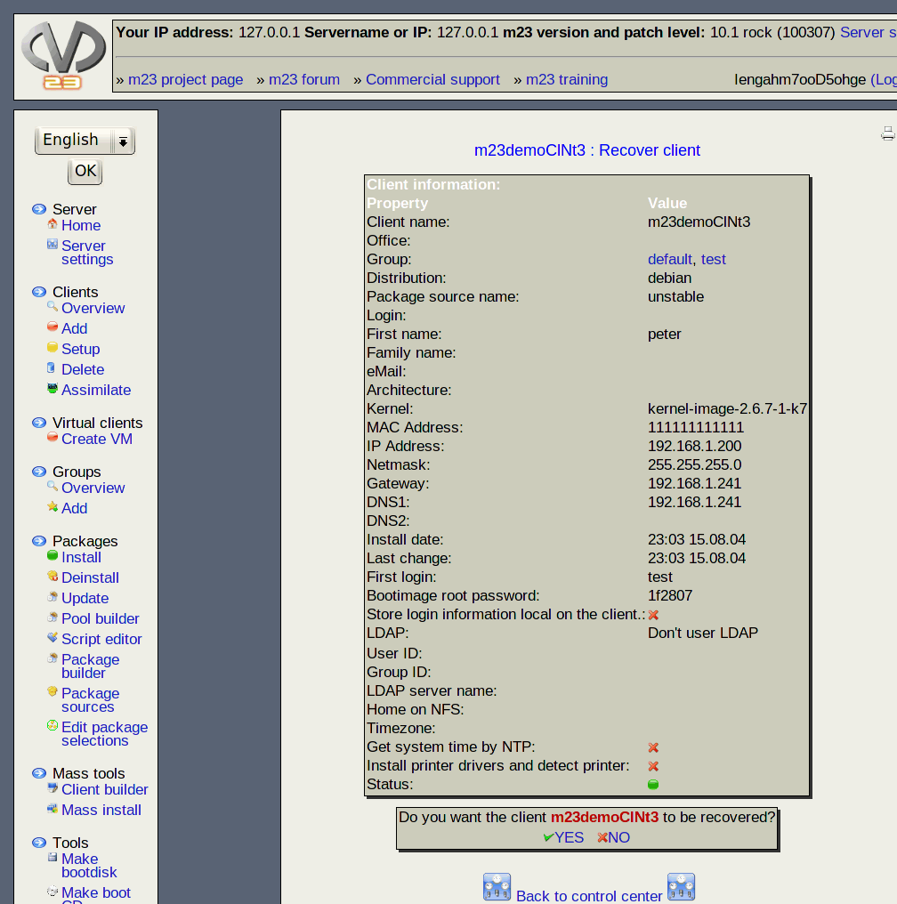

If you want to recover a client, the client will be installed as before. This includes repartitioning and reformatting. All the software which was installed with m23 will be reinstalled. Changes made to the client by hand can't be recovered.

Subsections
root
2018-05-08